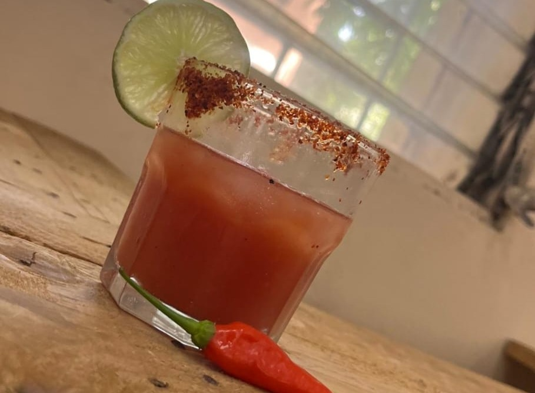
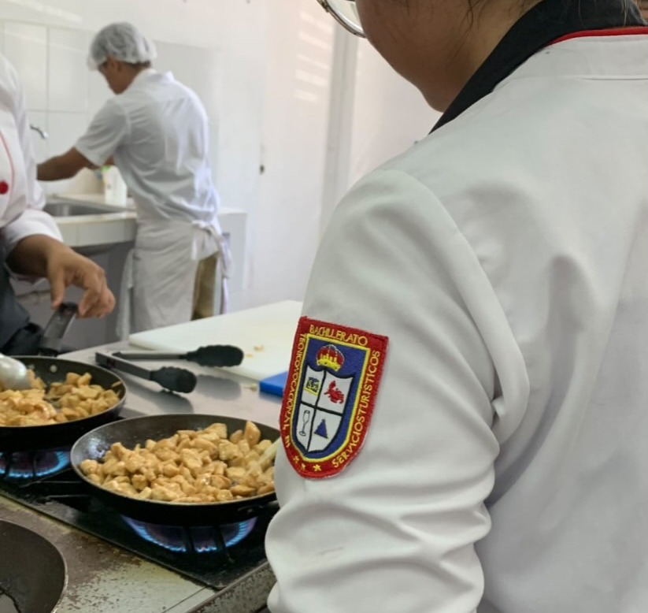
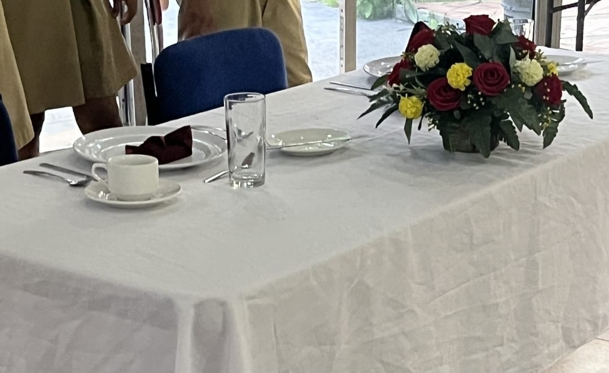

Prácticas de Hotelería

Servicio de Alimentos y Bebidas

Organización correcta de platos y manteles

Socialización con los compañeros
Aprende sobre guianza, hotelería, gastronomía y gestión de eventos. ¡Tu aprendizaje sobre turismo está aquí!

Prácticas de Hotelería

Servicio de Alimentos y Bebidas

Organización correcta de platos y manteles
Socialización con los compañeros